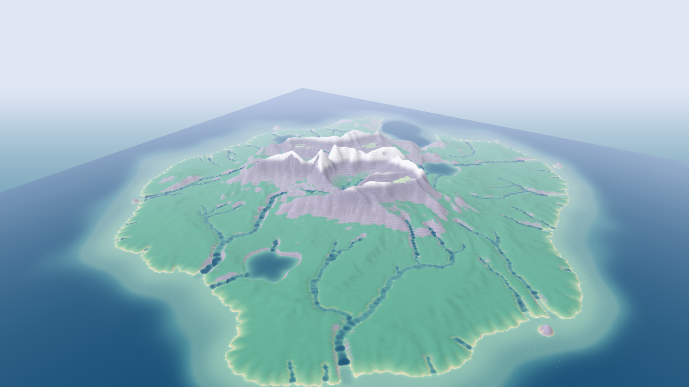
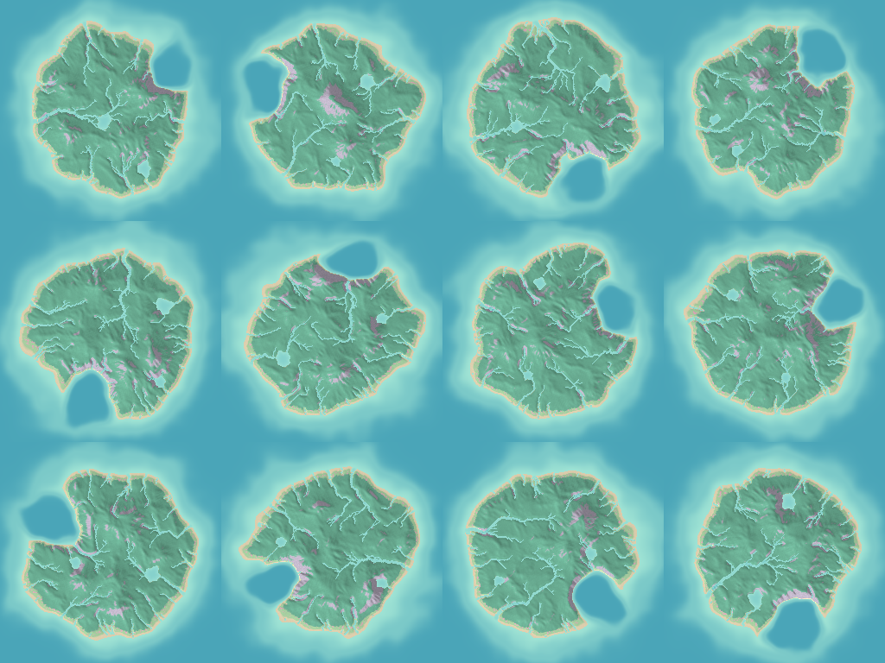

We researched terrain and our rivers grew up
After the first islands, we went and read what the terrain people actually do. The big idea we borrowed is simple: let water decide where valleys go.
So now the whole island is flooded from the sea with a priority queue. That quietly fixes every pit so water can always reach the ocean, and tells every patch of ground which neighbour it drains into. We add up how much land drains through each spot, carve rivers where that number is big, and let the ground sink toward its downstream neighbour a little each round. Valleys branch like real river systems instead of looking like noise.
We also made each seed spin its bays around, and built a gallery that shows twelve seeds of every locale on one sheet so we can judge variety at a glance.




What still looks bad
- Rivers read as pale or dark channels, not yet nice water ribbons with banks; some look like trenches on flat plains.
- Gullied valleys can overdo it near coasts and on hills; needs tuning per locale.
- Silhouettes are still mostly round; Sandbar Archipelago varies most, others need more shape variety (peninsulas, coves, sea stacks).
- Pale stepped bands at the far horizon in the highlands view are still not fixed.
- Sea level is still fixed, not set by height quantile; no moisture field yet.
- Generation takes 1 to 2.5 s on the main thread; no worker or cache yet.
- Not yet extracted into a standalone reusable terrain package.
Next
- Extract the generator into a standalone package with generate() API, JSON presets, PNG/JSON export.
- Web Worker generation and chunk mesh cache.
- Landmarks per locale, quantile sea level, moisture field, coast smoothing.